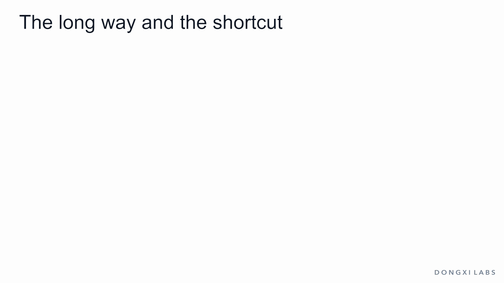
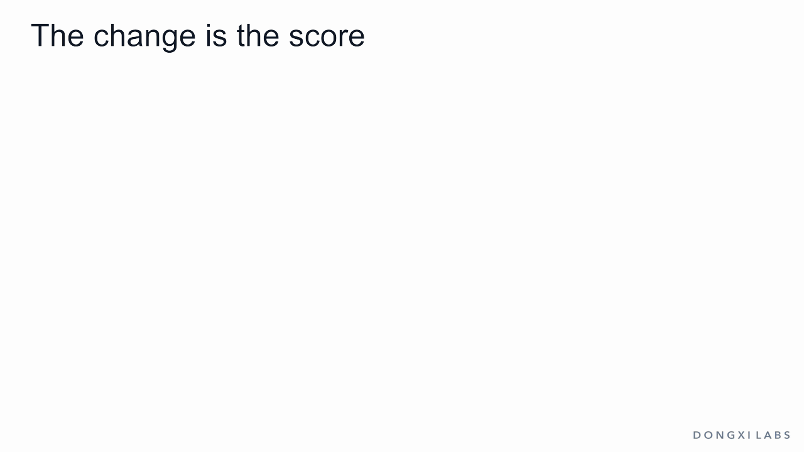
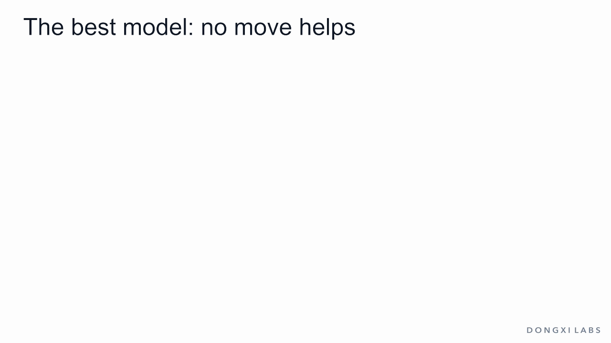
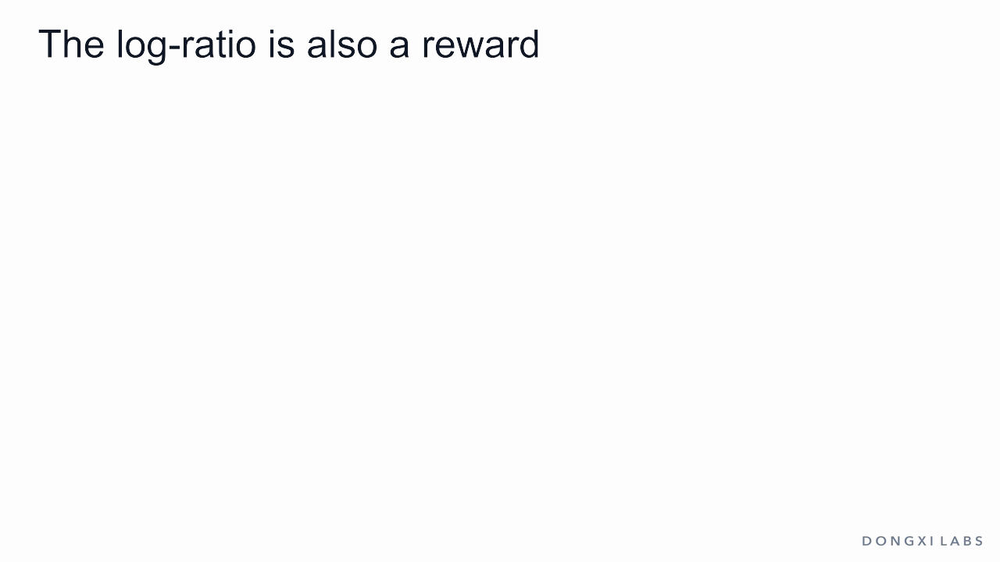
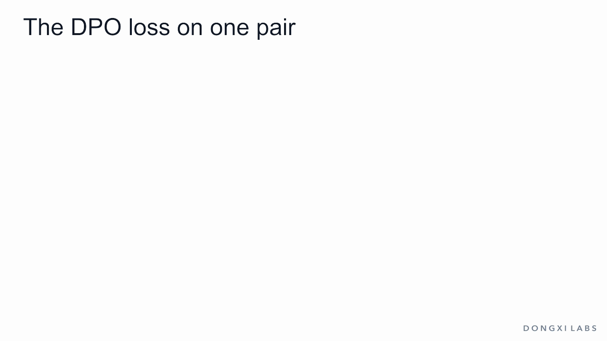
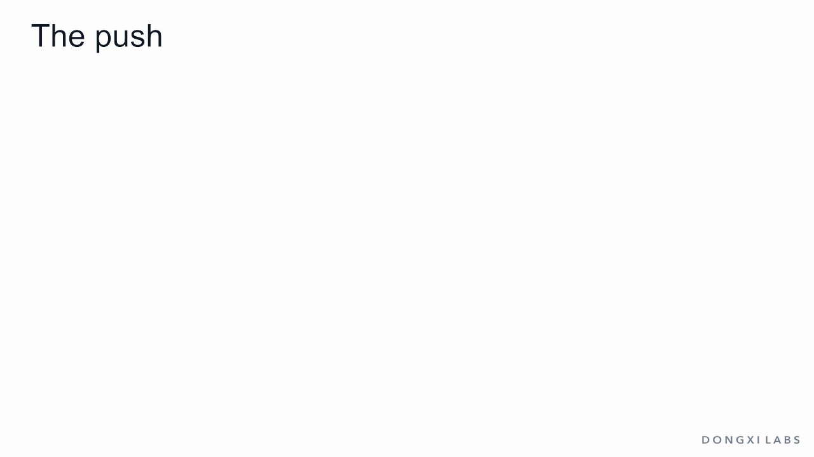
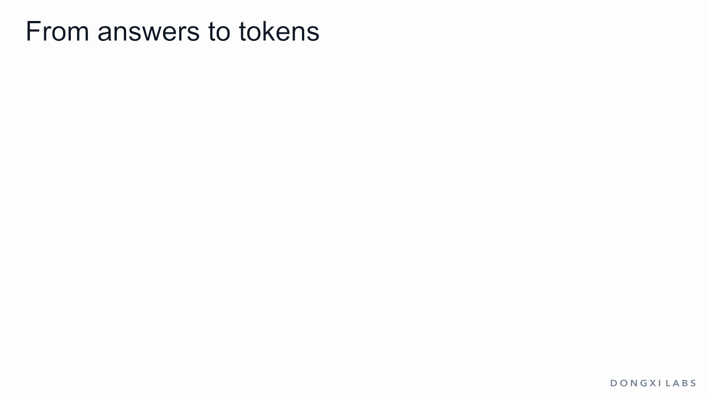
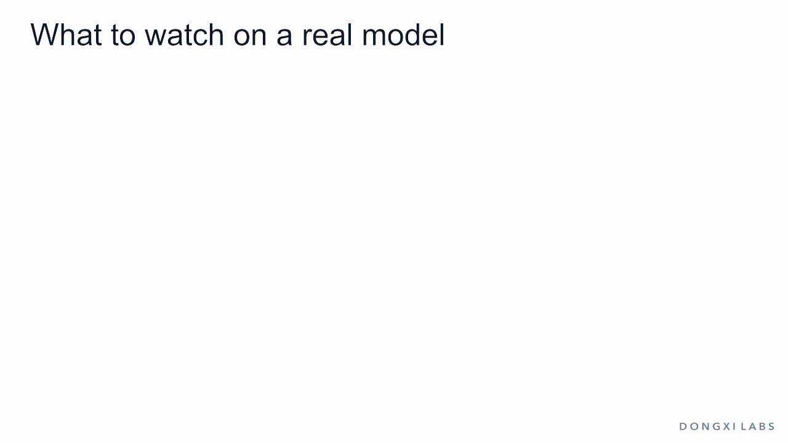

RLHF goes from human pairs through a reward model and RL to the chat model; DPO goes straight there with one loss on stored pairs.

As the model's shares move away from the dashed reference, each answer's score moves with them: raised answers above 0, lowered answers below 0, unchanged answers 0. Illustrative numbers.

Left, a separate reward model with a score head. Right, the trained model and the frozen reference read the same answer, and ratio, log and β give its score: 0.606 for the best answer after the small move. Illustrative probabilities.

Reward and KL enter the update; gold only judges checkpoints. In DPO, stored pairs replace the reward model.

With reward alone, all share flows to the overrated answer: reward 3, gold −2. With β = 1 it gets 4.3%: reward 1.22, gold 1.00. Toy example.

Five net-value bars level at 0.808, then the recipe: multiply by e^reward, add to Z = 2.243, divide.

At the best model every log-ratio equals the reward minus 0.808. In a comparison the constant cancels: 0.731 either way.

The gap sweeps from −3 to 3 and the loss curve draws itself, with the egg pair marked at 0.693, 0.435 and 0.313.

A nudge test, then arrows sized by the push: 0.953, 0.500 and 0.047. One pair trained step by step, with steps that shrink and never stop.

One step moves only the pair's two logits; all five shares change. The wrong answer rises from 8.0% to 8.2%, and the bars differ from π\*.

Who-won records arrive with the rewards hidden. Training on 1,000 of them moves the shares from the reference to the target, and the distance goes from 0.33 to 0.05. Simulated data; the bars are one run's shares.

Answer tokens and the end-of-turn token add up; prompt tokens are not counted. A longer reply has a lower total, so each answer is compared with its own reference value. Illustrative values.

Four things to watch: training and held-out accuracy from 50%, chosen and rejected probabilities, a run where both fall, and KL measured from samples. Invented curves, no measured values.
